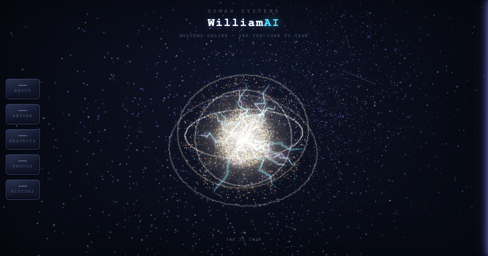
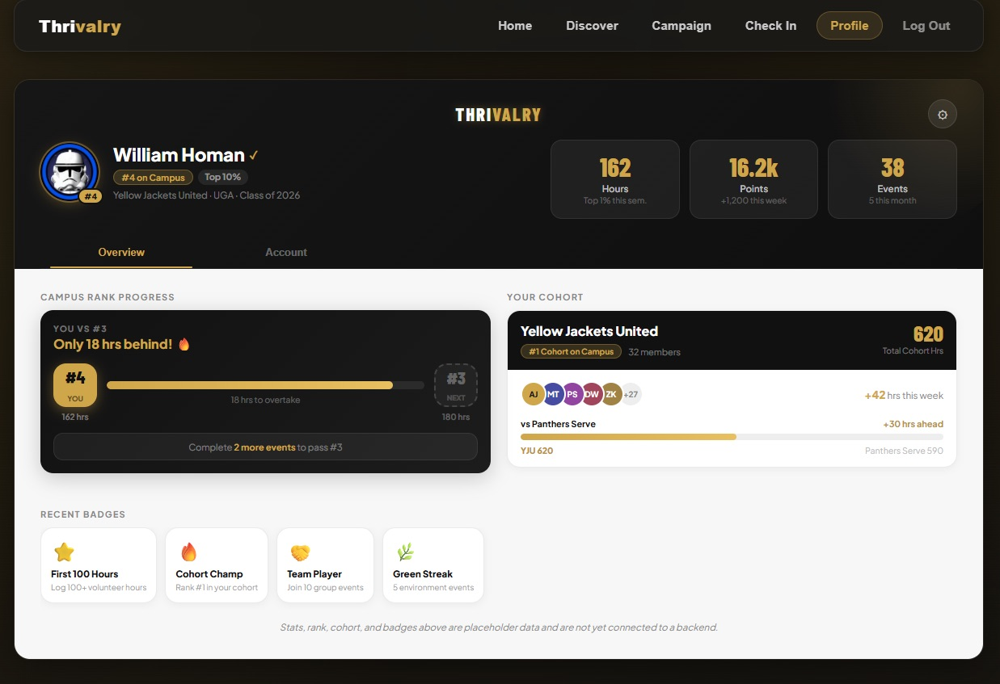
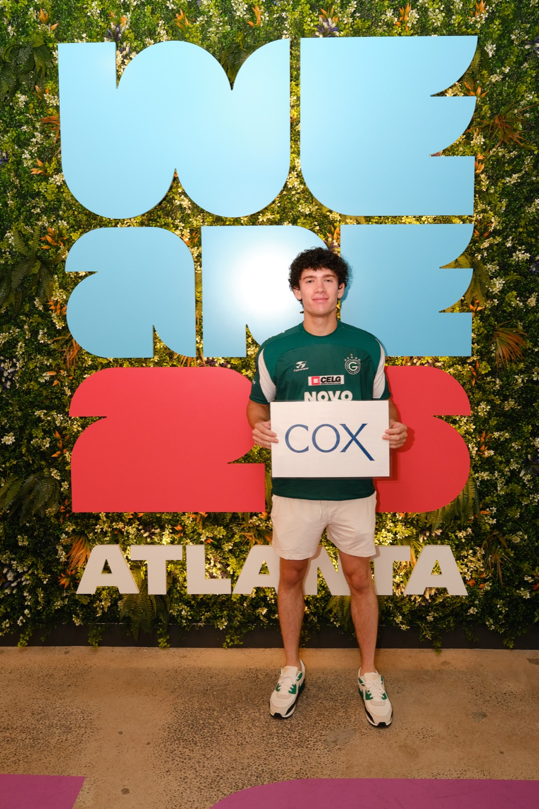
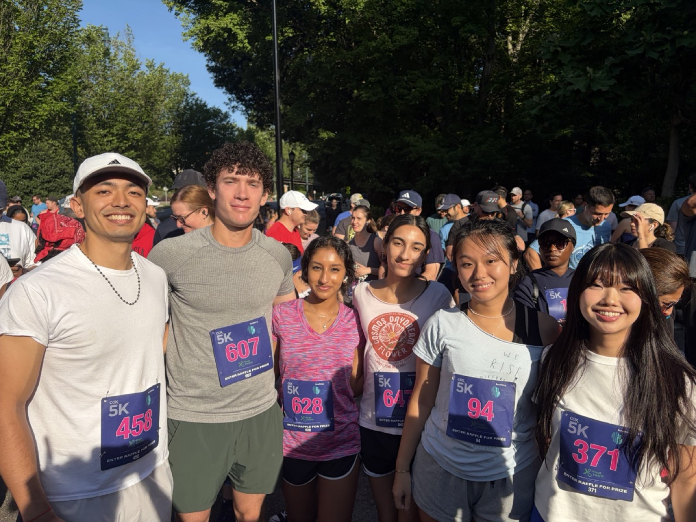
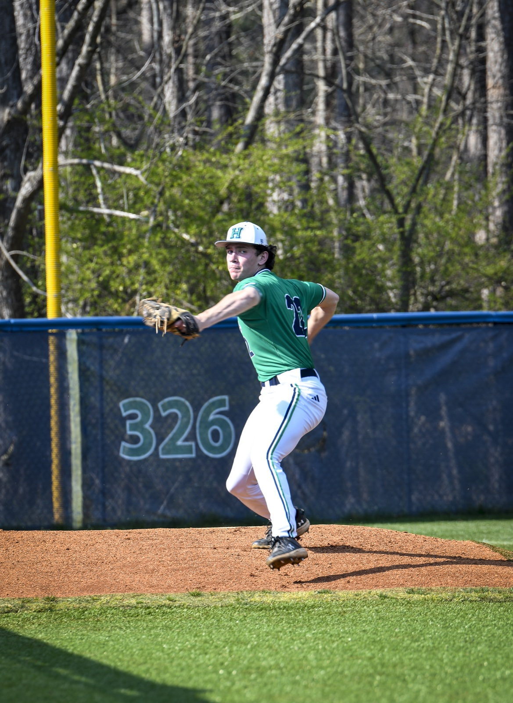
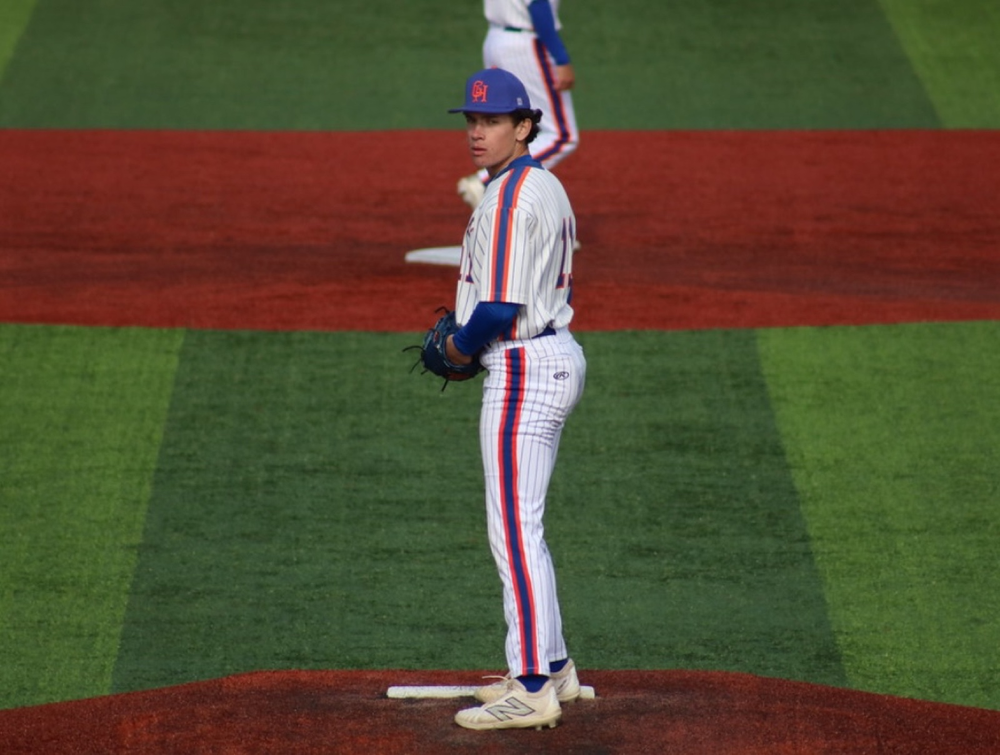

all particle motion computed in vertex shaders — CPU stays idle
Homan Systems
WilliamAI
SYSTEMS ONLINE — TAP THE CORE TO TALK
tap to talk
NEBULA FIELD13,000 clustered particles + cosmic-web filaments, wrapped endlessly on the GPU
CORE SPHERE5,200 particles — position is a pure function of time + hashed seeds in the vertex shader; zero CPU work per frame
HALO RINGS3,790 particles on four tilted pivots, JARVIS-reactor style
SOLAR FLARES1,200 GPU-looped jets — lifetime, direction and arc all derived from a hash of time, no per-particle state
PLASMA ARCSjagged bolts baked once on the CPU; the shader adds live wiggle + per-bolt flicker. Two "seeker" bolts re-aim at your cursor every frame
BLOOMno postprocessing pipeline — each WebGL canvas is mirrored to a low-res 2D canvas, blurred + screen-blended in CSS
CoreInfo
Welcome to WilliamAI
An Iron Man / J.A.R.V.I.S.-inspired passion project. The purpose of this project acts as a different way to showcase my personal portfolio, combining my interest in AI with futuristic technology. Please feel free to critique and give feedback, I hope you learn more about me!
PS: Try out talking to my AI and it will talk back to you!
PythonPyCharmGitLabGitHubUiPath StudioUiPath OrchestratorVS CodeClaude API
Languages
PythonJavaScriptHTMLCSSGLSL
JavaScript, HTML, CSS, and GLSL (shader code) are what this site — WilliamAI — is actually built with.
Certifications
Anthropic Generative AI Development · UiPath Automation Associate Training · UiPath Automation Explorer Training · Office 365
WilliamAI (this site)

A 3D particle AI hub portfolio with a Claude-powered chatbot — GPU-shader particle system (Three.js), voice input/output.
Three.jsClaude APIJavaScriptVercel
How it's built: hand-written GLSL vertex/fragment shaders drive every particle system (core, starfield, lightning arcs) directly on the GPU — no physics or postprocessing library. Voice runs through the Web Speech API with a real-time amplitude-driven pulse; chat replies stream from the Claude API via a Vercel serverless function so the API key never touches the client.
Thrivalry App

AI-powered campaign management platform that organizes school-vs-school community service campaigns in partnership with nonprofit organizations. Uses Azure OpenAI to pair contestants together based on interests and experience. Built as an intern project with other IBT interns at Cox Enterprises.
Next.jsReactPythonAzure FunctionsNode.jsGit
AI Powered Drone
A program built in VS Code and Unity using an Anthropic LLM for drones to identify targets, move towards them, and complete missions — with AI vision.
UnityClaude APIAI Vision
Assignment Manager
Used by GHC professors. Built an assignment builder that works with GitLab, PyCharm, and Claude to send out problem set labs — automating a manual process for professors, saving time to invest into students. Includes a chat bot so professors can create assignments with a prompt.
PythonGitLab APIClaude APISQLiteTextual
SafeHome Game
Python text-based adventure game with multiple features, visuals, and timed decisions.
Python
Cox Enterprises headshot, 2026

Cox world cup event, networking with fellow interns

Cox 5k with fellow IBT (Integrated Business Technologies) interns raising money for CERF.

Pitching at Harrison High School

Pitching at Georgia Highlands College
May 2022 – Jan 2023
Ace Hardware — Acworth, GA. Sales Associate — customer service, inventory management, top converter of loyalty members for multiple months.
Aug 2020 – May 2024
Harrison High School — Kennesaw, GA. Graduated. GPA 4.2, Baseball & Hope Scholarship, National Honors Society, Student Athlete: Baseball.
Aug 2024 – May 2026
Georgia Highlands College — Cartersville, GA. Associate of Science in Computer Science, GPA 4.0. Student Athlete: Baseball, President's List x4, NJCAA First Team All-Academic.
May 2026 – Present
Cox Enterprises — Atlanta, GA. AI/Automation Intern — RPA solutions, agentic AI workflows, UiPath Studio automations. Selected as 1 of 144 interns from 20,000+ applicants company-wide.
2026 – 2028
University of Georgia — Athens, GA. Bachelor of Science in Computer Science.
CloseResume
CoreAI ConsoleClearEmail
// Boot sequence complete. Ask me anything about William — background, skills, or projects. Replies stream in live, and I can talk back.